App-Name: OffLink
Zielgruppe: Alle, die Gruppensprachanrufe innerhalb desselben WiFi-Netzwerks führen möchten
Erstellungsdatum: 9. März 2026
Letzte Aktualisierung: 11. April 2026
OffLink ist eine App, die Gruppensprachanrufe ohne Internetverbindung innerhalb desselben WiFi-Netzwerks oder Tethering-Umgebung ermöglicht. Durch P2P-Kommunikation über WebRTC werden Sprachanrufe mit minimaler Latenz realisiert.
Anwendungsbeispiele:
Startbildschirm nach dem Öffnen der App. Beginnen Sie mit den drei Schaltflächen am unteren Rand.
OffLink arbeitet im WiFi-LAN-Modus. Alle Teilnehmer müssen mit demselben WiFi-Netzwerk verbunden sein. Das Host-Gerät startet einen Signalisierungsserver, und die Sprachanrufe werden zwischen den Geräten im selben Netzwerk durchgeführt.
Wichtig: Es wird keine Internetverbindung benötigt.
| Rolle | Kompatible Geräte | Beschreibung |
|---|---|---|
| Host | Android / iPhone | Gerät, das den Signalisierungsserver startet und den Anruf verwaltet |
| Gast | Android / iPhone | Gerät, das dem vom Host erstellten Anruf beitritt |
Hinweis: Alle Teilnehmer müssen mit demselben WiFi-Netzwerk verbunden sein.
| Berechtigung | Verwendung | Auswirkung bei Ablehnung |
|---|---|---|
| Mikrofon | Sprachanrufe | Anrufe nicht möglich |
| Kamera | QR-Code-Scan | Gruppenregistrierung per QR nicht möglich |
| Geräte in der Nähe (WiFi) ※Android | WiFi-Netzwerkerkennung | Host-Erkennung nicht möglich |
| Standort ※Android | WiFi-Scan (Systemanforderung) | WiFi-SSID kann nicht abgerufen werden |
| Bluetooth ※Android | Headset-Verbindung | Headset-Nutzung nicht möglich |
| Benachrichtigungen ※Android | Anrufeinladungsbenachrichtigungen | Keine Hintergrundbenachrichtigungen |
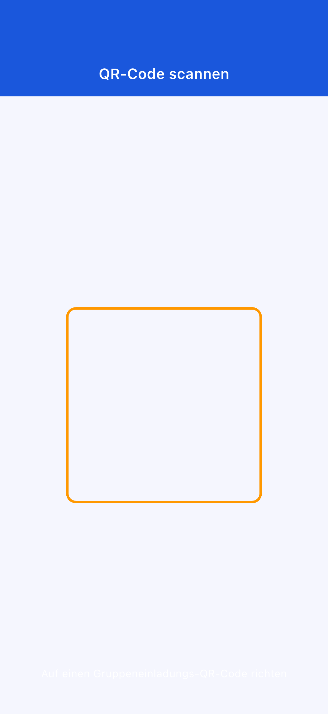
Falls Sie eine Berechtigung versehentlich abgelehnt haben: Gehen Sie zu „Einstellungen" → „Apps" → „OffLink", um die Berechtigungen zu ändern.
Starten Sie sofort einen Anruf, ohne vorher eine Gruppe erstellen zu müssen.
Schritt 1: Alle Teilnehmer verbinden sich mit demselben WiFi
Schritt 2: Tippen Sie auf „Sofortanruf" (grüne Schaltfläche)
Schritt 3: Geben Sie Ihren Benutzernamen ein

Schritt 4: Wählen Sie eine Stufe und starten Sie den Anruf (→ 3-5. Punktesystem)
Schritt 5: Eine Anrufeinladung wird automatisch an die Mitglieder im selben WiFi-Netzwerk gesendet
Falls bereits ein Host vorhanden ist, können Sie wählen, ob Sie beitreten oder einen neuen Anruf starten möchten.
Schritt 1: Tippen Sie auf „Als Host erstellen" (blaue Schaltfläche)
Schritt 2: Geben Sie den Gruppennamen und ein Passwort (optional) ein und tippen Sie auf „Erstellen"
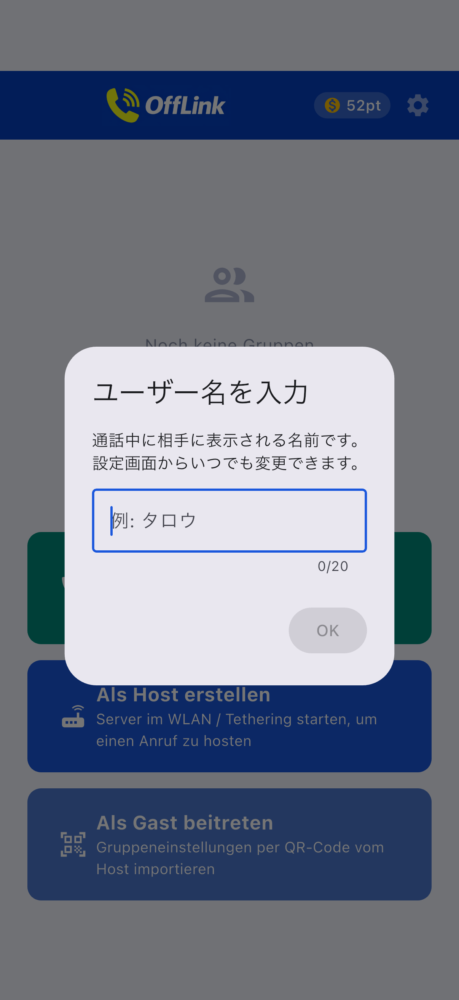
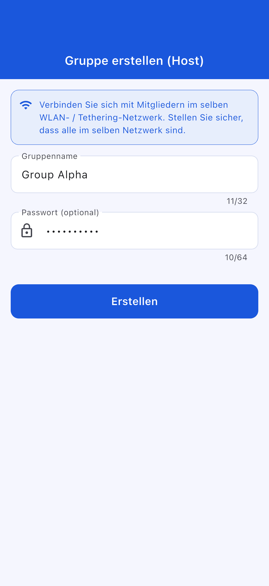
Tipp: Wählen Sie einen leicht erkennbaren Gruppennamen. Es wird empfohlen, ein Passwort festzulegen.
Schritt 3: Wählen Sie die Erstellungsaktion
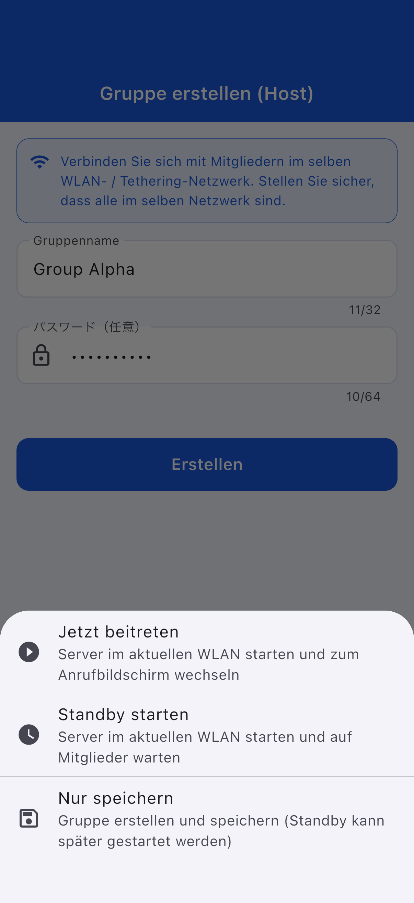
| Aktion | Beschreibung |
|---|---|
| Jetzt beitreten | Startet den Server und öffnet den Anrufbildschirm |
| Standby starten | Startet den Server und wartet |
| Nur speichern | Kann später gestartet werden |
Schritt 1: Tippen Sie auf „Als Gast beitreten" (hellblaue Schaltfläche)
Schritt 2: Wählen Sie die Beitrittsmethode
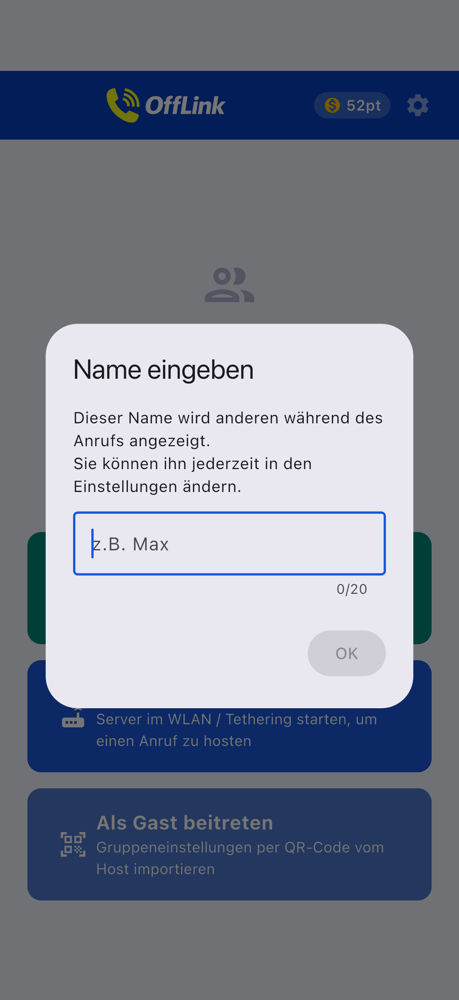
| Methode | Vorgehensweise |
|---|---|
| 📱 QR-Code scannen | Scannen Sie den QR-Code des Hosts |
| 📋 Code einfügen | Fügen Sie den geteilten Code ein |
| ✏️ Manuelle Eingabe | Geben Sie die Informationen direkt ein |
QR-Code teilen (Host-Seite):
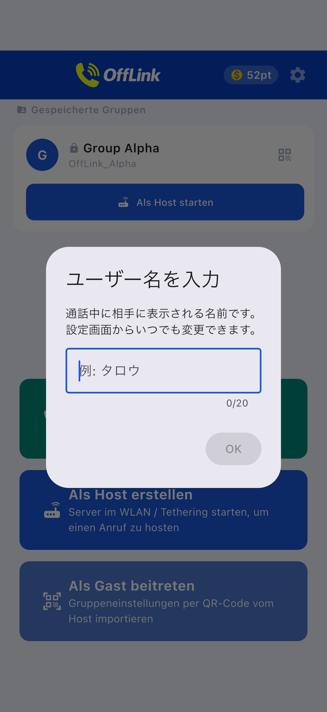
Code einfügen (Gast-Seite):
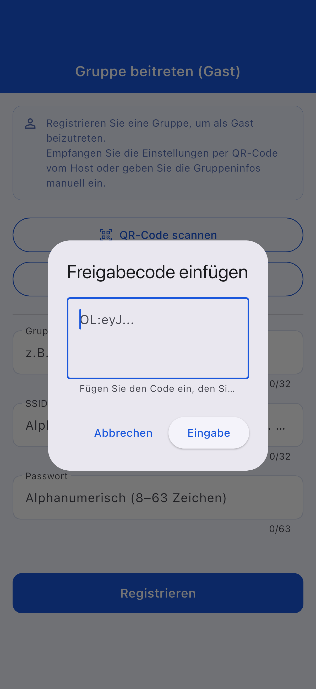
Schritt 3: Sobald die Informationen eingegeben sind, tippen Sie auf „Registrieren"
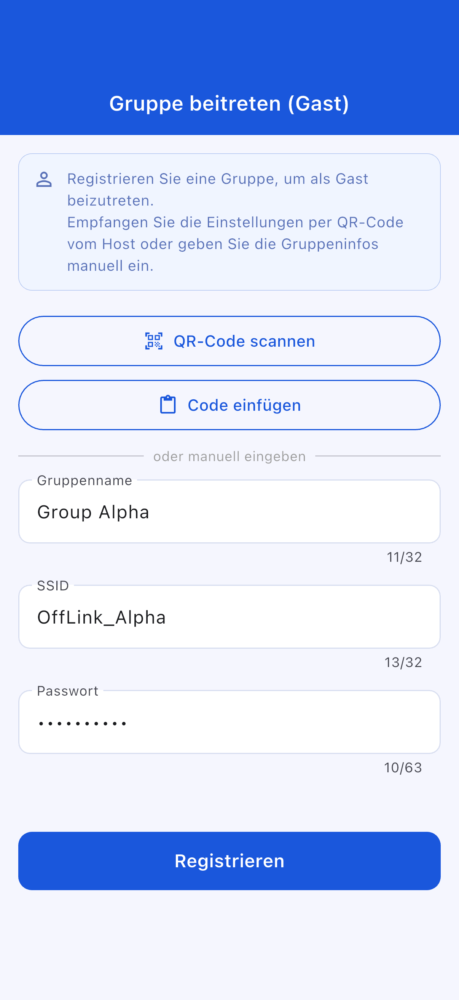
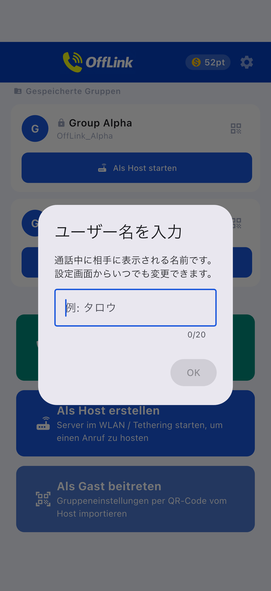
Gast-Beitrittsbildschirm:
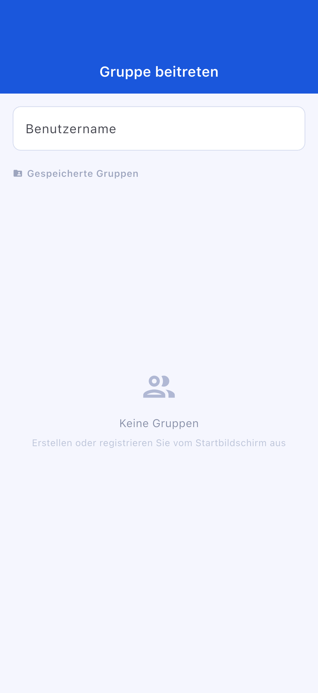
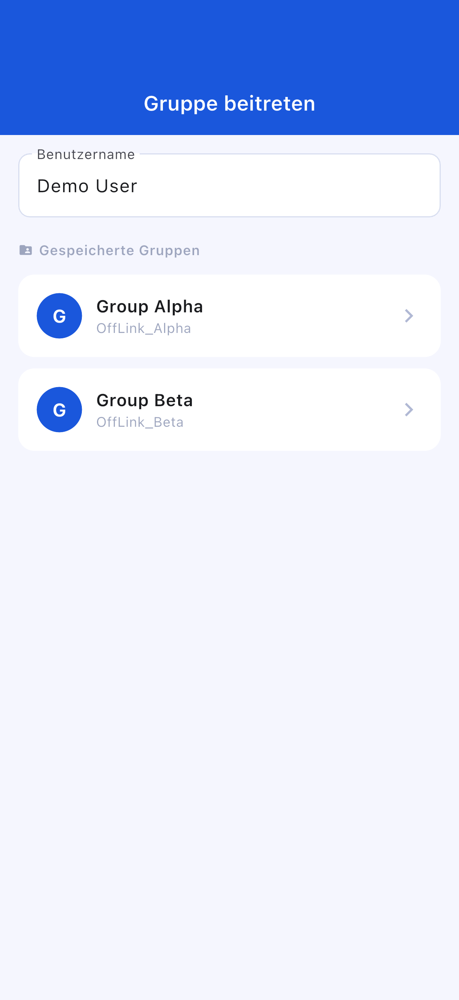
Standby-Bildschirm:
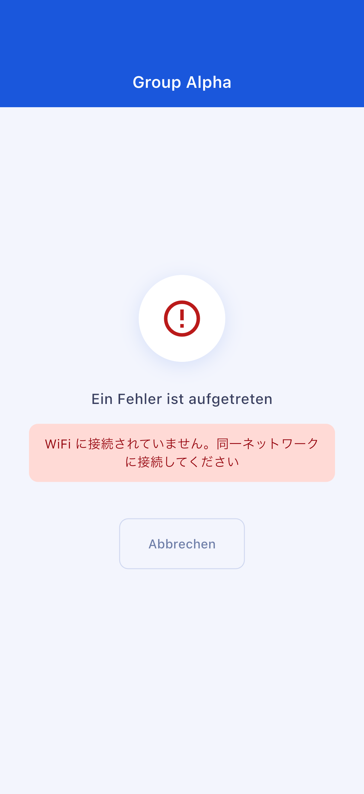
Anrufbildschirm:
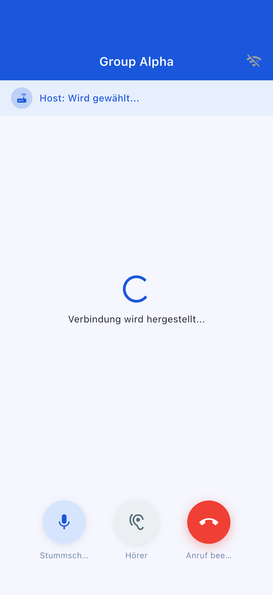
| Schaltfläche | Funktion |
|---|---|
| 🎤 Stummschalten | Mikrofon ein-/ausschalten |
| 🔊 Audioausgabe wechseln | Lautsprecher / Bluetooth / Ohrhörer |
| 🔴 Anruf beenden | Anruf verlassen |
| Stufe | Verbrauchte Punkte | Maximale Teilnehmer |
|---|---|---|
| Standard | 10 pt | 4 Personen |
| Large | 20 pt | 10 Personen |
OffLink verfügt über keine Funktion zum automatischen Starten eines Hotspots. Bitte aktivieren Sie das Tethering manuell.
Gehen Sie zu „Einstellungen" → „Apps" → „OffLink" → „Berechtigungen", um sie zu ändern
| Element | Einschränkung |
|---|---|
| Maximale Teilnehmeranzahl | Standard: 4 / Large: 10 |
| Kommunikationsmodus | Nur WiFi LAN |
| Hintergrund | Je nach Gerätemodell eingeschränkt |
| Limit gespeicherter Gruppen | Free: 5 / Premium: unbegrenzt |
| Element | Empfehlung |
|---|---|
| Android | 5.0+ (API 21+) |
| iOS | 13.0+ |
| Akku | Mindestens 80 % empfohlen |
| Speicher | Mindestens 100 MB |
| WiFi | Router / Tethering / Mobiler Hotspot usw. |